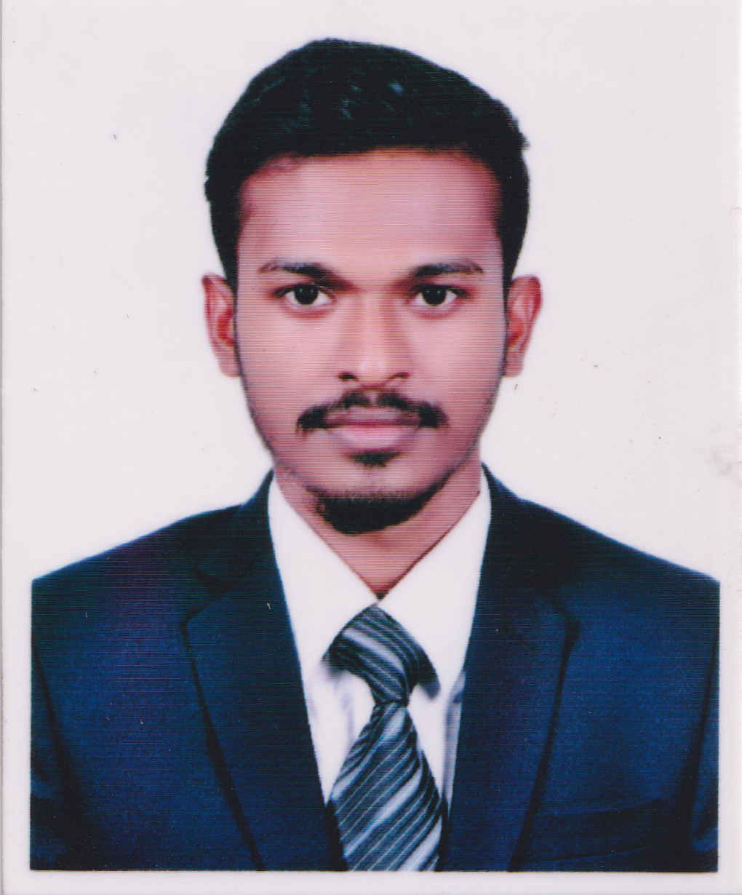

CURRICULUM VITAE
EMON ISLAM
Cell: 01949400955
Email: emonislam079@gmail.com
Objective
Want to succeed in a stimulating and cHallenging environment, build the success of the institution while i experience advanced opportunities.
Personal Details
Father's Name: Late.Md. Nazrul Islam.
Mother's Name: Sanoara Begum.
Address: Giridhara, Kadamtali, Dhaka-1362.
Date of Birth: 01/10/1999.
NID No: 9161496063.
Gander : Male.
Marital status: Unmarried.
Religion: Islam.
Nationality: Bangladeshi.
Academical Qualification
Bachelor of Science(B.Sc)
- Durition: 4 years.
- Session: 2017-2018.
- University: Tejgaon College, Dhaka.
- Result: Appeared.
Higher Secondary Certificate (HSC)
- Group: Science.
- Result: GPA-4.33(out of 5).
- Passing: Year:2016.
- Institution: Tejgaon College, Dhaka.
- Authority: Dhaka.
Secondary School Certificate (SSC)
- Group: Science.
- Result: GPA-4.56(out of 5).
- Passing: Year:2014.
- Institution: Barnamala High School & College.
- Authority: Dhaka.
Training
Graphic Designing
- Institution: Skill Hunt.
- Course: Professional Graphic Designing.
- Organized By: Dhaka University.
- Support by: British Council.
Web Development
- Institution: Programing Hero.
- Course: Professional Web Development.
- Organized By: Jankar Mahabub.
Computer Skils
- Web Development(html, css, java script).
- Graphic Designing( Photoshop, Illustrator).
- Office Managment(MS Word, MS Excel, Power point).
- School Managment Softwear.
- Email Managment.
- Internet Browsing.
Language Skills
- Bengali: Listening, speaking & Writing.
- English: Listening, Writing.
Additional Qualities
- Able to multitask.
- Able to from relationship with colleagues.
- Have a proactive,"can-do" approach to work.
- good team worker.
- Hard working.
Experience
- As a computer operator at Tushardhara High School and College From September 2018 to December 2020.
- As a Softwear Managment Operator at Tushardhara High School and College.
- As a computer operator at Shantidhara High School and College From January 2018 to September 2018.
I here by declare myself that all the statement in this CV is authentic colplete and correct of the best of my Knowledge and belief.